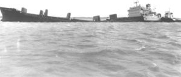

Data31 de março de 1987
LocalizaçãoBanco dos Cavalos, Baía de São Marcos
EmbarcaçãoGraneleiro (Bandeira Sul-Coreana)
Carga a Bordo~196.000 toneladas (minério de ferro e carvão)

O que aconteceu
Em 31 de março de 1987, o navio graneleiro sul-coreano Hyundai New World encalhou no banco de areia conhecido como Banco dos Cavalos, na Baía de São Marcos, logo após deixar a região portuária de São Luís carregado com cerca de 196 mil toneladas de minério de ferro e carvão.
Preso sobre o banco arenoso e submetido às variações extremas de maré e fortes correntes da baía, o casco não resistiu às tensões estruturais e partiu-se ao meio, resultando na perda total da embarcação.
Causas e Fatores Contribuidores
- Amplitude de marés: Forte variação de maré característica da Baía de São Marcos (que pode ultrapassar 7 metros).
- Desvio de canal: Afastamento da rota balizada de navegação próximo a bancos de areia móveis e de baixa profundidade.
- Calado elevado: Navio de grande porte operando totalmente carregado, reduzindo a margem de segurança sob a quilha.
Impactos Ambientais e na Navegação
- Perda total: O rompimento do casco impossibilitou o salvamento da embarcação e da maior parte de sua carga.
- Poluição marinha: Vazamento de óleo combustível no ecossistema estuarino local.
- Obstáculo submerso: Os destroços permaneceram no Banco dos Cavalos como risco à navegação, provocando em 1990 a colisão do navio petroleiro Orade Nassau.
Marco na praticagem local: O encalhe do Hyundai New World reforçou o rigor nas janelas de maré, batimetria constante e protocolos de praticagem para navios de grande porte (Capesize e VLOC) no Complexo Portuário do Itaqui e Ponta da Madeira.